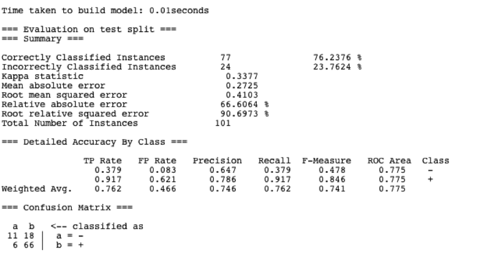
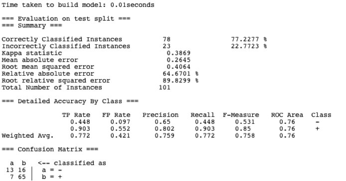
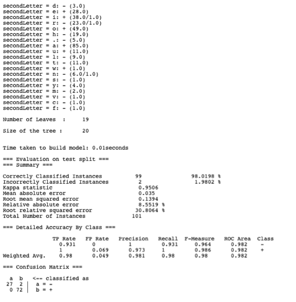
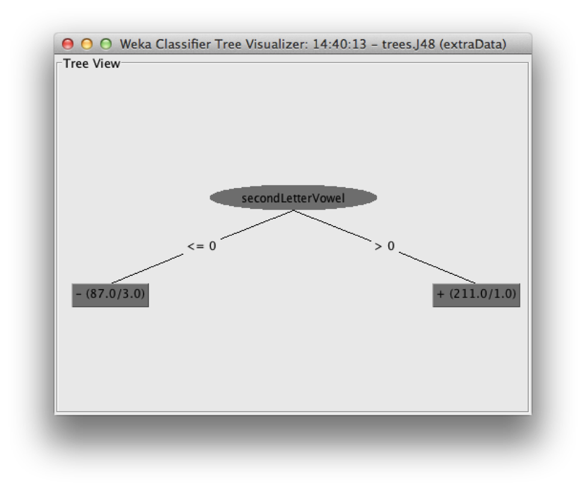

In this project I was to take a list of names and a + or - next to them, representing a winner or a looser. I took this and did feature extraction from the names. With those new features I could then identify what in a name made them a looser or winner.
First I did a quick analysis of the data in a spreadsheet program. I calculated that about 2/3 of the people were winners while only 1/3 were losers. I then separated the data out by sorting on the winning and loosing label to see what patterns might arise that I could visually see. There did not seem to be a discernable pattern. The data was more hidden than that.
Next I tried sorting the data based on the name. This showed some patterns in the data that started to lead me closer to a solution. I noticed that some of the names that started with certain letters seemed more likely to be almost all losers or almost all winners. I figured this could be one of the possible characteristics to make a classification on. I also noticed something really interesting in that all Thomases were losers while all Toms were winners. This could be name length or how it relates to the last name or some other unknown attribute.
After the initial exploration of the data, I wrote a script that would take in names and extract features from each of the names. One of the first features I extracted was the first letter of the first name followed by number of letters in the names. This script produced a CSV file, which is one of the file formats that Weka can read. I decided to use the J48 algorithm because Weka is able to visually show a tree of the data. Upon running this initial test it is obvious that this does not give Weka enough information to classify with great accuracy the data.
My next approach was to look at different types of letters. We have consonants and vowels, which can be easily extracted. So I used the counts from that and got about the same results as before in Weka.
Looking back at how Thomases are losers while Toms are not, I decided that this is how I will get my foot in the door. Because each of those first names have the exact same label of winner or loser, it makes me think that the middle and last name have no relation to the fact of who is a winner. So, what seperates “Thomas” from “Tom”? The length of the name doesn’t really make sense because there visually those other names don’t show that pattern. How about the other letters in the name? So lets look at the second letter.
98% Classification. That’s pretty good. Looking at what the second letter classified as winners turns out to be a, e, i, o, or u. Which we can easily recognize are vowels. So after adding an attribute of the second letter being a vowel we find that this is indeed true. We get the same split and a very simple tree:
The errors the noise in the data indeed are characters in The Office.